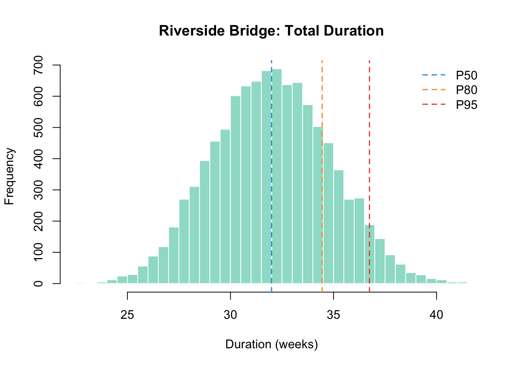
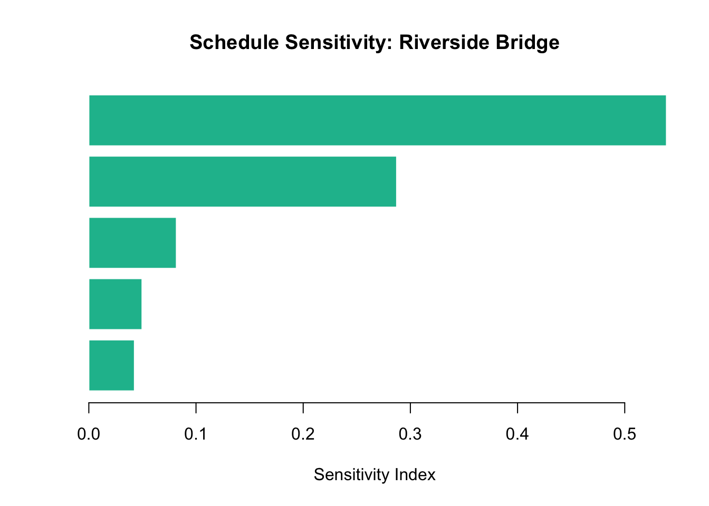
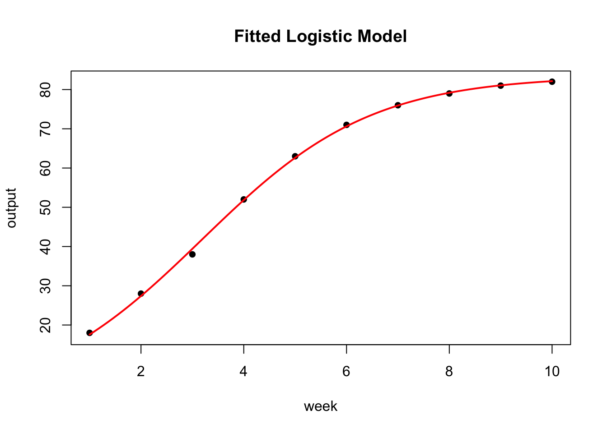
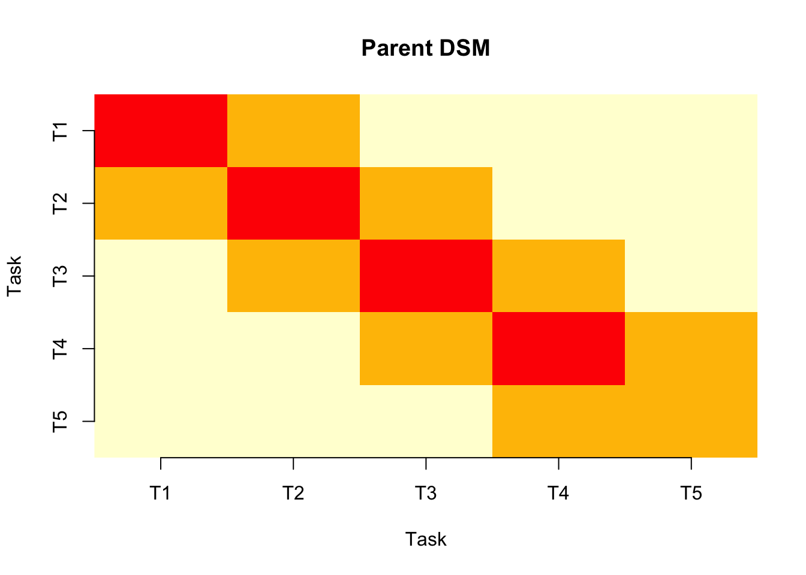
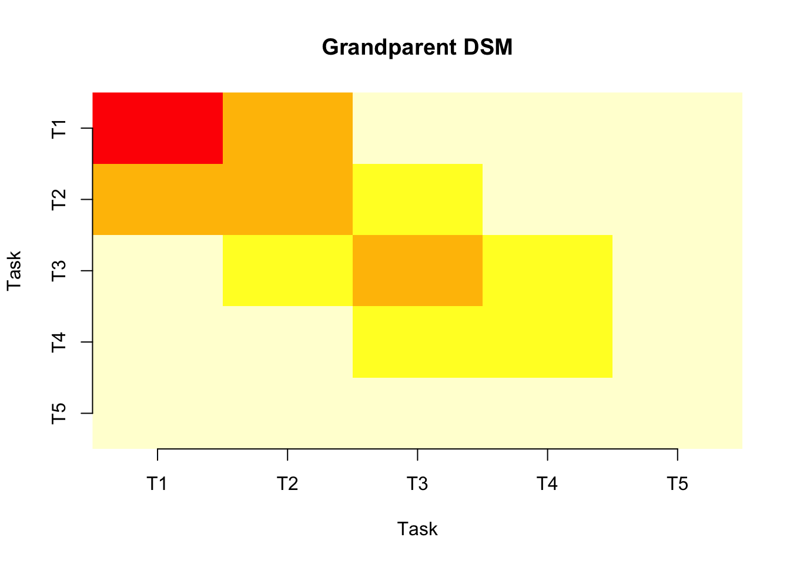
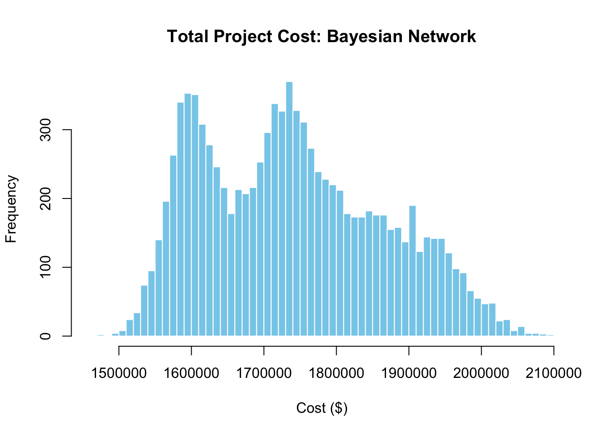

library(PRA)
set.seed(42)Appendix D — Case Study: Riverside Bridge Replacement
“In theory, theory and practice are the same. In practice, they are not.” — attributed to various people who have managed projects
This appendix applies every method in the book to a single fictional civil engineering project. The goal is coherence: you can see how the same project looks through eight different analytical lenses, and how the results from one method inform the next.
D.1 The Project
The Riverside Bridge Replacement is a design-bid-build infrastructure project replacing a two-lane vehicle bridge with a new four-lane structure. The project has five sequential tasks:
| ID | Task | Distribution | Notes |
|---|---|---|---|
| T1 | Site Preparation | Triangular(2, 3, 5) weeks | Depends on weather and access permits |
| T2 | Foundation & Piling | Normal(8, 1.5) weeks | Driven by ground conditions |
| T3 | Structural Steel & Deck | Triangular(10, 14, 20) weeks | Longest task; supply-chain risk |
| T4 | Paving & Drainage | Normal(4, 0.8) weeks | Relatively predictable |
| T5 | Signage & Handover | Uniform(1, 3) weeks | Administrative; wide range |
Budget at Completion (BAC): $2,500,000 Planned schedule proportions: 15%, 35%, 65%, 85%, 100% (cumulative by period)
Resources: Survey Crew, Civil Engineer, Structural Engineer, Contractor Crew, QA Inspector
Identified risks:
| Risk | Probability | Affected resource | Cost if occurs |
|---|---|---|---|
| Adverse Weather | 0.50 | Contractor Crew | +$120K (mean), SD $30K |
| Ground Conditions | 0.40 | Civil Engineer | +$200K (mean), SD $50K |
| Material Delays | 0.30 | Structural Engineer | +$80K (mean), SD $20K |
D.2 Step 1: Monte Carlo Simulation
We begin with a forward simulation of total project duration. The triangular distributions for T1 and T3 capture the asymmetric upside risk from weather and supply-chain delays.
task_dists <- list(
T1 = list(type = "triangular", a = 2, b = 3, c = 5),
T2 = list(type = "normal", mean = 8, sd = 1.5),
T3 = list(type = "triangular", a = 10, b = 14, c = 20),
T4 = list(type = "normal", mean = 4, sd = 0.8),
T5 = list(type = "uniform", min = 1, max = 3)
)
sim <- mcs(10000, task_dists)
print(sim)Monte Carlo Simulation Results:
Total Mean: 32.01807
Total Variance: 7.990155
Total Standard Deviation: 2.826686
Percentiles:
5% 50% 95%
27.47307 31.99335 36.74317 hist(sim$total_distribution, breaks = 60,
main = "Riverside Bridge: Total Duration",
xlab = "Duration (weeks)", col = "#18bc9c80", border = "white")
abline(v = quantile(sim$total_distribution, c(0.50, 0.80, 0.95)),
col = c("#3498db", "#f39c12", "#e74c3c"), lty = 2, lwd = 1.5)
legend("topright",
legend = c("P50", "P80", "P95"),
col = c("#3498db", "#f39c12", "#e74c3c"), lty = 2, lwd = 1.5, bty = "n")
contingency_reserve <- contingency(sim, phigh = 0.80, pbase = 0.50)
cat("Schedule contingency reserve (P80 - P50):", round(contingency_reserve, 1), "weeks\n")Schedule contingency reserve (P80 - P50): 2.5 weeksD.3 Step 2: Sensitivity Analysis
Which task is driving the schedule variance? This tells us where mitigation money is best spent.
sens <- sensitivity(task_dists)sorted_sens <- sort(sens, decreasing = FALSE)
barplot(sorted_sens, horiz = TRUE,
names.arg = names(sorted_sens),
xlab = "Sensitivity Index",
main = "Schedule Sensitivity: Riverside Bridge",
col = "#18bc9c", border = "white", las = 1)
abline(v = 1, lty = 2, col = "#e74c3c")
T3 is the clear driver. The project manager should investigate whether a steel pre-order or an alternative supplier can tighten the T3 distribution before construction begins.
D.4 Step 3: Second Moment Method
The Second Moment Method gives us a fast analytical check, no simulation needed.
means <- c(T1 = 3, T2 = 8, T3 = 14.67, T4 = 4, T5 = 2)
vars <- c(T1 = 0.5, T2 = 2.25, T3 = 16.33, T4 = 0.64, T5 = 0.333)
smm_result <- smm(means, vars)
print(smm_result)Second Moment Method Results:
------------------------------
Total Mean: 31.67
Total Variance: 20.053
Total Standard Deviation: 4.478058 cat("MCS mean: ", round(mean(sim$total_distribution), 2), "weeks\n")MCS mean: 32.02 weekscat("SMM mean: ", round(smm_result$total_mean, 2), "weeks\n")SMM mean: 31.67 weekscat("MCS SD: ", round(sd(sim$total_distribution), 2), "weeks\n")MCS SD: 2.83 weekscat("SMM SD: ", round(smm_result$total_std, 2), "weeks\n")SMM SD: 4.48 weeksThe SMM mean and standard deviation closely match the simulation results, confirming the calculation. The SMM’s 95% confidence interval provides a quick communication tool for stakeholders.
D.5 Step 4: Earned Value Management
The project is now in Period 3 of 5. The contractor has spent $1,350,000 so far and reports 48% completion.
BAC <- 2500000
schedule <- c(0.15, 0.35, 0.65, 0.85, 1.00)
costs <- c(350000, 810000, 1350000)
period <- 3
complete <- 0.48
PV <- pv(BAC, schedule, period)
EV <- ev(BAC, complete)
AC <- ac(costs, period)
cat("PV (Planned Value): $", format(PV, big.mark = ","), "\n")PV (Planned Value): $ 1,625,000 cat("EV (Earned Value): $", format(EV, big.mark = ","), "\n")EV (Earned Value): $ 1,200,000 cat("AC (Actual Cost): $", format(AC, big.mark = ","), "\n")AC (Actual Cost): $ 1,350,000 cat("CV (Cost Variance): $", format(cv(EV, AC), big.mark = ","), "\n")CV (Cost Variance): $ -150,000 cat("SV (Schedule Var.): $", format(sv(EV, PV), big.mark = ","), "\n")SV (Schedule Var.): $ -425,000 cat("CPI: ", round(cpi(EV, AC), 3), "\n")CPI: 0.889 cat("SPI: ", round(spi(EV, PV), 3), "\n")SPI: 0.738 eac_typical <- eac(BAC, method = "typical", cpi = cpi(EV, AC))
cat(
"EAC (typical): $",
format(round(eac_typical), big.mark = ","), "\n"
)EAC (typical): $ 2,812,500 A CPI below 1.0 means the project is over budget for work completed. The EAC (typical) forecasts the final cost if current cost efficiency continues. The project manager needs to investigate the source of the cost overrun; the Adverse Weather or Ground Conditions risks are likely candidates.
D.6 Step 5: Bayesian Risk Update
Before construction began, the probability of encountering poor ground conditions was estimated at 0.40. Halfway through the foundation work, the geotechnical team reports finding unexpected clay layers, a strong signal that the ground conditions risk has materialised.
causes <- c(0.40, 0.25)
given <- c(0.85, 0.60)
not_given <- c(0.15, 0.20)
prior_risk <- risk_prob(causes, given, not_given)
cat("Prior risk probability:", round(prior_risk, 3), "\n")Prior risk probability: 0.601 observed <- c(1, NA) # clay layers observed; second cause unknown
post_risk <- risk_post_prob(causes, given, not_given, observed)
cat("Posterior risk probability:", round(post_risk, 3), "\n")Posterior risk probability: 0.895 cat("Update (posterior - prior):", round(post_risk - prior_risk, 3), "\n")Update (posterior - prior): 0.294 Observing the clay layers nearly doubles the risk probability. This updated estimate should feed directly into the contingency reserve and the EAC recalculation.
D.7 Step 6: Learning Curve
The Contractor Crew is new to the bridge construction method and their weekly output (cubic metres of concrete placed per week) shows a classic learning pattern.
crew_data <- data.frame(
week = 1:10,
output = c(18, 28, 38, 52, 63, 71, 76, 79, 81, 82)
)
fit <- fit_sigmoidal(crew_data, "week", "output", "logistic")
cat("Model: Logistic\n")Model: Logisticcat("Residual SE:", round(summary(fit)$sigma, 3), "\n")Residual SE: 0.648 plot_sigmoidal(fit, crew_data, "week", "output", "logistic")
week12_pred <- predict_sigmoidal(fit, 12, "logistic")
cat("Predicted output at week 12:", round(week12_pred$pred, 1), "m³/week\n")Predicted output at week 12: 83.1 m<U+00B3>/weekThe crew is expected to reach near-plateau productivity by week 12. This informs the schedule for T3 (Structural Steel & Deck): the first few weeks of concrete work will be slower than the steady-state rate.
D.8 Step 7: Design Structure Matrix
Which tasks are most structurally coupled through shared resources?
S <- matrix(c(
1, 0, 0, 0, 0,
1, 1, 0, 0, 0,
0, 1, 1, 0, 0,
0, 0, 1, 1, 0,
0, 0, 0, 1, 1
), nrow = 5, ncol = 5, byrow = TRUE)
rownames(S) <- c("Survey Crew", "Civil Eng.", "Structural Eng.", "Contractor Crew", "QA Inspector")
colnames(S) <- c("T1", "T2", "T3", "T4", "T5")
R <- matrix(c(
0, 0, 0, 1, 0,
1, 1, 0, 0, 0,
0, 0, 1, 0, 0
), nrow = 3, ncol = 5, byrow = TRUE)
rownames(R) <- c("Adverse Weather", "Ground Conditions", "Material Delays")
colnames(R) <- c("Survey Crew", "Civil Eng.", "Structural Eng.", "Contractor Crew", "QA Inspector")
p <- parent_dsm(S)
g <- grandparent_dsm(S, R)plot(p)
plot(g)
The DSMs confirm that T2 (Foundation) and T3 (Steel) are most tightly coupled, sharing the Civil Engineer and Structural Engineer. When ground conditions affect the foundation work, pressure immediately flows to the steel schedule.
D.9 Step 8: Probabilistic Network
We now model the two dominant risks (Adverse Weather, Ground Conditions) as a Bayesian network and simulate total project cost.
nodes <- data.frame(
id = c("A", "B", "C", "D", "E"),
label = c("Adverse Weather", "Ground Conditions",
"Contractor Cost", "Foundation Cost", "Total Cost"),
group = c("Risk", "Risk", "Resource", "Resource", "Project"),
stringsAsFactors = FALSE
)
links <- data.frame(
source = c("A", "B", "C", "D"),
target = c("C", "D", "E", "E"),
value = rep(1, 4),
stringsAsFactors = FALSE
)
distributions <- list(
A = list(type = "discrete", values = c(1, 0), probs = c(0.50, 0.50)),
B = list(type = "discrete", values = c(1, 0), probs = c(0.40, 0.60)),
C = list(type = "conditional", condition = "A",
true_dist = list(type = "normal", mean = 1220000, sd = 30000),
false_dist = list(type = "normal", mean = 1100000, sd = 20000)),
D = list(type = "conditional", condition = "B",
true_dist = list(type = "normal", mean = 700000, sd = 50000),
false_dist = list(type = "normal", mean = 500000, sd = 30000)),
E = list(type = "aggregate", nodes = c("C", "D"))
)
graph <- prob_net(nodes, links, distributions = distributions)
sim_net <- prob_net_sim(graph, num_samples = 10000)hist(sim_net$E, breaks = 60,
main = "Total Project Cost: Bayesian Network",
xlab = "Cost ($)", col = "skyblue", border = "white")
learn_net <- prob_net_learn(graph,
observations = list(B = 1),
num_samples = 10000)
cat("Mean cost (prior):", format(round(mean(sim_net$E)), big.mark = ","), "\n")Mean cost (prior): 1,739,952 cat("Mean cost (ground conditions = Yes):", format(round(mean(learn_net$E)), big.mark = ","), "\n")Mean cost (ground conditions = Yes): 1,859,277 Conditioning on the observed ground conditions (confirmed by the clay layers in Step 5) shifts the expected total cost upward significantly. This updated estimate, combined with the EAC from Step 4, gives the project manager a fully informed picture of financial exposure.
D.10 Step 9: Agentic Analysis
All of the above can also be driven by an AI agent through the PRA MCP server (Chapter 12), with no function-by-function scripting required. Once pra_mcp_server() is registered with Claude Code or Claude Desktop, the agent calls the same tools you used in Steps 1–4. For example, the Monte Carlo simulation from Step 1 corresponds to mcs_tool with this task_dists_json:
[{"type":"triangular","a":2,"b":3,"c":5},
{"type":"normal","mean":8,"sd":1.5},
{"type":"triangular","a":10,"b":14,"c":20},
{"type":"normal","mean":4,"sd":0.8},
{"type":"uniform","min":1,"max":3}]The follow-up steps map to contingency_tool (phigh=0.80, pbase=0.50) and evm_analysis_tool (bac=2500000, schedule=[0.15,0.35,0.65,0.85,1.0], period=3, complete=0.48, costs=[350000,810000,1350000]). Because these tools wrap the same functions used in Steps 1–4, they reproduce the identical numbers.
NoteDriving the tools from natural language
With the MCP server connected, you could instead simply ask: “Run a Monte Carlo simulation for these five tasks, give me the P80 contingency, and run a full EVM analysis.” The agent selects the tools and fills in the arguments, guided by the bundled Agent Skills.
D.11 What the Methods Told Us
Pulling the results together:
| Method | Key finding |
|---|---|
| MCS | P80 schedule = ~35 weeks; contingency reserve ~3 weeks |
| Sensitivity | T3 (Steel & Deck) drives 60%+ of schedule variance |
| SMM | Confirms MCS mean and SD analytically |
| EVM | Period 3: CPI < 1.0, cost overrun in progress |
| Bayesian | Ground conditions risk updated from 0.40 → ~0.70 after observations |
| Learning Curve | Crew plateaus ~week 12; early T3 concrete work will be slower |
| DSM | T2–T3 most coupled; ground conditions propagates through both |
| Network | Conditioning on ground conditions = Yes adds ~$200K to expected cost |
No single method gives the full picture. The MCS tells you how wide the distribution is. The sensitivity analysis tells you where to act. The EVM tells you how you’re performing right now. The Bayesian update tells you how new information should change your reserves. Together, they are the complete toolkit, and that is the point of this book.